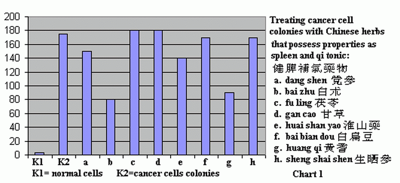
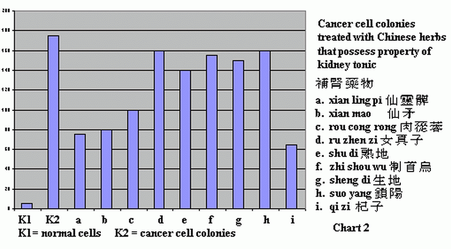
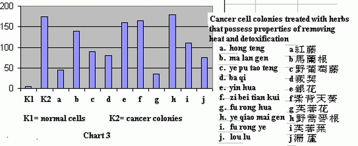
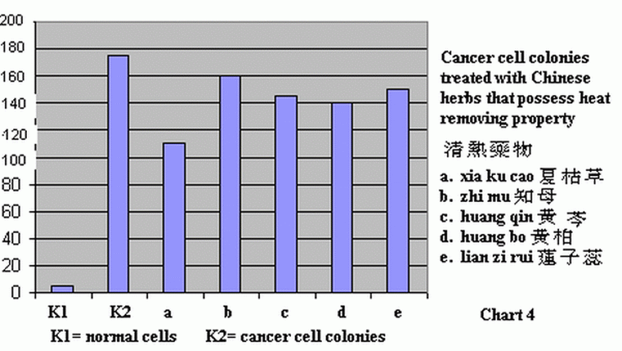
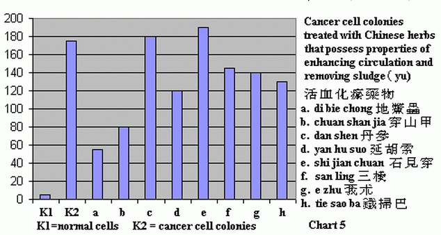
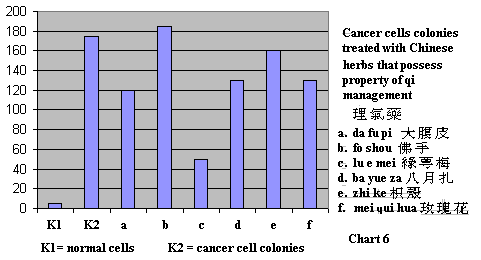
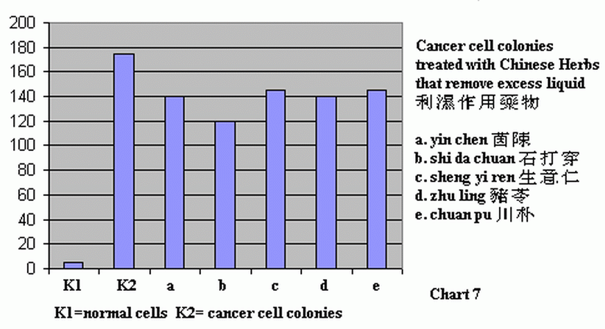
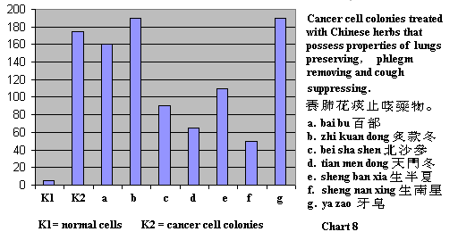
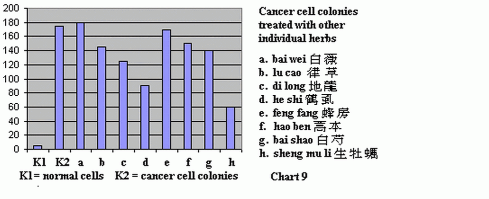

Effect of Chinese Herbs on cancer cell colonies.
Chart 1
 |
Link: dang shen, bai zhu, fu ling, gan cao, huai shan yao, bai bian dou, huang qi, sheng shai shen
Chart 2 Herbs that have properties of kidney tonic
Effect of cooling and detox type of herbs on cancer cell colonies

Chart 3 Effect of herbs that have properties of clearing heat

Chart 4 Effect of herbs that have properties of clearing heat

Chart 5 Herbs for enhancing blood circulation and for removing sludge

Chart 6 Herbs for managing qi

Chart 7 Herbs for moving excess liquid

Chart 8 Herbs for lungs and coughs and as expectorants

Chart 9 Other herbs used singly

Source of information: Shanghai Chinese Medical School.
Presented by Qiu Jia Xin
Edited and translated by Joe Hing Kwok Chu